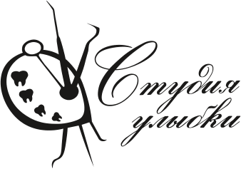

Третий круг: десять вариантов в духе «Мазка-улыбки» из второго круга, с палитрой из старого логотипа. Идея та же — палитра художника, зубы вместо красок, инструменты вместо кистей, рукописное название, — но проще, чище и в цветах клиники: терракота, шалфей, лиловый, дуб.
